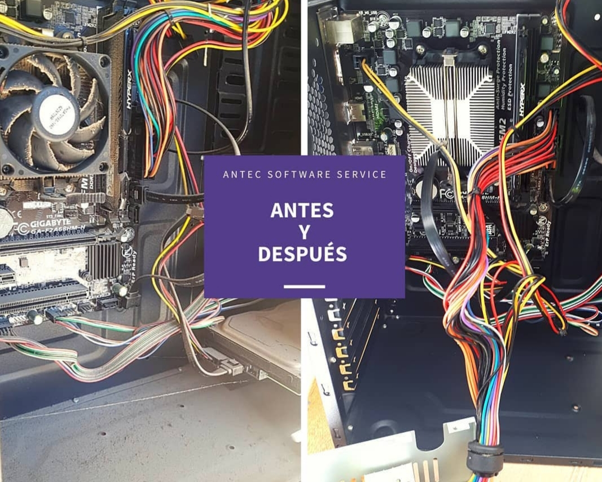

● Resolución problema: 'Driver irql not less or equal'
Esta falla suele ser un error relacionado con la memoria, que se produce si un proceso del sistema o un controlador de dispositivo busca acceso a una dirección de memoria para la que carece de derechos de acceso válidos.

● Resolución problema: 'bad pool caller windows 10'
La pantalla azul bad pool caller 0x00000c2 es un error de Windows que se produce debido a entradas de registro no válidas y configuraciones del sistema configuradas incorrectamente.
Este error ocurre principalmente cuando el software solicita al sistema recursos que no están disponibles.

● Resolución problema: 'Bloqueos repentinos del sistema'
Este error suele ser debido a la perdida de capacidad de enfriamiento por obstrucciones en los elementos de refrigeración.
